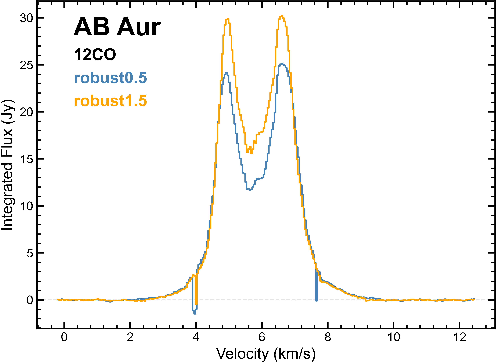
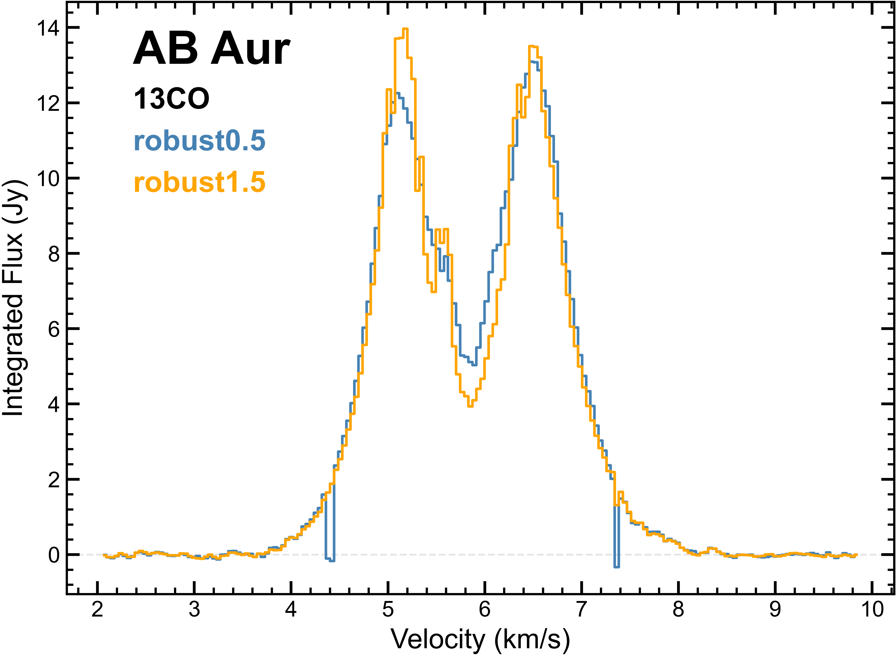
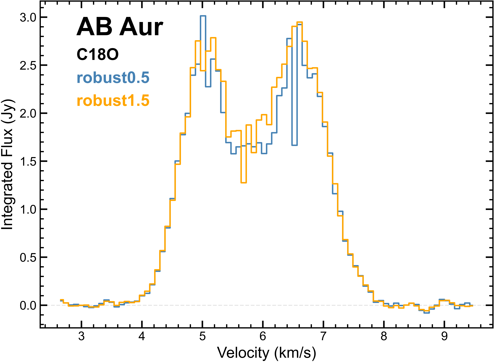
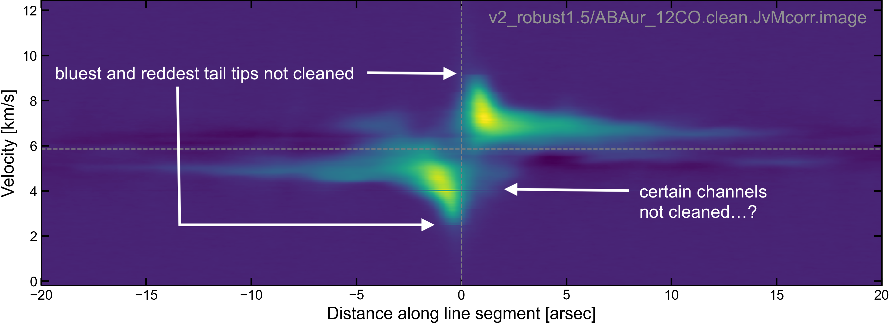

Summary of Challenges Motivating the Adopted Imaging Strategy#
As documented on the the previous page (Journal of Challenges and Initial Experiments), we encountered challenges with imaging the line data for this program. This page summarizes the two main challenges, and presents insights gained from an absolutely critical NAASC virtual chat.
In shorthand, the two challenges are: “negative bowling” and “channel dropout”. The former (“negative bowling”) is a known phenomenon and a result of fundamental properties of our interferometric data. The latter (“channel dropout”) is a glitch I’ve never seen documented elsewhere, possibly a bug related to our specific masking and deconvolving choices.
Challenge 1: Missing short uv-spacings (“Negative bowling”)#
Description & diagnosis#
In the central channels of the 12CO channel maps, we can see that we’re getting these “negative bowls” around the recovered emission. Looking at Table 7.1 of the Technical Handbook, the Maximum Recoverable Scale (MRS) of our short-baselinse configuration (C3) is 7.02 arcsec. Compare this to the emission in one of the central 12CO channels, i.e. the Largest Angular Scale (LAS) of our source. Very roughly speaking, you can imagine the emission in one such channel as a Gaussian with a FWHM of 10 arcsec. The Fourier transform of that Gaussian is going to have significant amounts of flux at scales in uv space smaller than what is achieved by the C3 configuration. In other words, due to the MRS of our data, we don’t have any measurements on small enough uv scales, meaning we can’t constrain the flux very well on the large spatial scales, and there’s probably a lot of flux that we’re resolving out. In short, we are in the situation where LAS > MRS.
The only way to properly deal with “LAS > MRS” is to increase our MRS, i.e., to get data on those missing shorter uv spacings. (We thus proposed for 7m observations in the next ALMA cycle). However, in the absence of this data, there are some imaging strategies we can use to mitigate the issue of missing short spacings. See “Mitigation strategy: Force more major cycles” below.
See it in action: “Negative bowling”
The following movies are from “4th round of imaging experiments”. The negative bowling is visible in both the 12CO and 13CO images:
What about the final (published) image cubes?
It’s important to understand that even after employing the strategies described on this page to mitigate the effects of LAS > MRS, we still do not get rid of the negative bowling altogether (of course). The following visualizations show this fact.
{kind=link}
{kind=link}
Mitigation strategy: Force more major cycles#
When you go through a major cycle, you transform from the image plane into the Fourier plane. Specifically, you Fourier transform your clean model (the model that is built up so far) back into the Fourier plane everywhere. This process “fills out” the uv plane - even at spacings where you don’t actually have data.
Because we are missing these short spacings, we want to clean slowly (i.e. with a lot of major cycles) to try to put as much of the model flux back into the full uv distribution as possible. This is the only thing we can do to address the missing short spacings, in the absence of having 7m data. The trade-off is that doing a lot of major cycles is computationally expensive.
How to force more major cycles: Make the minor cycles end more quickly#
So how do we make tclean perform many, many major cycles? The answer is: Make the minor cycles end more quickly. There are two ways to trigger the end of a minor cycle:
1. Hit the maximum number of minor cycle iterations.
This is controlled by the tclean parameter, cycleniter.
If clean hits cycleniter before it hits the minor cycle threshold, then that means that within one minor cycle, it would have assigned cycleniter clean components. Previously (during the experiments) I had cycleniter set to 300. When doing a multi-scale clean (where the clean model components are Gaussians), 300 clean components can actually be a lot of flux! This is because the peak of the Gaussians are the quantities being assigned values, not their total volumes. You want to clean as little flux in each minor cycle as possible, to ensure that you are not assigning clean components inside sidelobes and are filling out the uv space. So turn down cycleniter.
2. Hit the maximum minor cycle threshold.
There are a couple tclean parameters controlling this, including cyclefactor and gain.
The minor cycle threshold is calculated as cyclefactorxpeaksidelobe. The peaksidelobe is the peak value of your dirty beam’s sidelobes (e.g. 7%). You want to avoid cleaning INSIDE what is actually a sidelobe. For example, say there’s a bright point source at one place in the dirty image. Some fraction of its signal will appear in other places in the image, due to the beam having sidelobes. By setting the minor cycle threshold to cyclefactorxpeaksidelobe, you avoid trying to assign clean components inside areas that could possibly only have signal due to this sidelobe-leakage. You want to go back and do a major cycle before you try to clean in that area.
Therefore, we should turn up cyclefactor. Previously (during the experiments) I had been using a cyclefactor of 1 (the default). We want to turn cyclefactor up to 1.5 or 2. We started with 2, and crossed fingers that tclean doesn’t take outrageously long to run.
How does gain come in? When tclean identifies a pixel to clean, it says “I’m going to take this value I see here and assign it a clean component that is gainx[that value]”. In other words, if it identifies a 1 Jy pixel to try to clean, it will assign a Gaussian component to have a peak whose value is gain times 1 Jy. The default gain is 0.1, or 10%. We should turn down gain to 0.05 or 0.02.
Major bonus of cleaning with many major cycles (relevant for Challenge 2)#
If we change the tclean parameters above, and if we don’t clean too deeply, we might be able to get away with a broad clean mask (i.e., usemask = 'pb' and pbmask = 0.2).
Why? There’s not actually any theoretical basis for tight masking. People have used masking as a way to (1) get around having poor uv coverage, and (2) reduce the number of major cycles they need to run (to save computational time). If you run the clean algorithm as originally designed by Hogbom with every cycle as a major cycle, it should actually work perfectly fine with no mask. If you’re never cleaning very deep in any given major cycle, then tclean will never be in the situation where the sidelobes are stronger than the actual emission, and so it should keep assigning correct clean components.
Cleaning with the broad mask may not be perfect, but we’ll be able to get away with a lot more. The broad mask will perform a lot better with this kind of “cautious” clean.
Challenge 2: tclean consistently not cleaning certain channels (“Channel dropout”)#
Description & diagnosis#
“Channel dropout” is a shorthand term I’m using to describe a spectrally-discontinuous clean. When imaging a spectral cube, most channels get cleaned, but a small few do not. In other words, most channels of the clean model contain clean components, but a small few do not. I’ve never seen this documented elsewhere, and it didn’t occur in all the the experiments, only rounds 3 and 4. The best way I can describe it is to show it in action:
See it in action: “Channel dropout” (Integrated intensity profiles)
{kind=link}

{kind=link}

{kind=link}

12CO, 13CO and C18O (4th round of imaging experiments): Spatially-integrated line profiles of the JvM-corrected images. The channel dropout can be seen as discontinuous dips in the line profiles at some velocities, where no clean components (or insufficiently many clean components, or even negative clean components) have been added to the model. To point out the spectral locations of just a few instances: ~4 km/s in 12CO, ~4.4 km/s in 13CO, or ~6.6 km/s in C18O.
See it in action: “Channel dropout” (Position-velocity diagrams)
{kind=link}

12CO (3rd round of imaging experiments): Position-velocity diagram along the disk major axis of the JvM-corrected CLEAN image.
Here’s some additional details and lessons learned from experiments where it occurred:
Version of CASA being used: modular CASA, version 6.4.3.27
It occurred for different robust parameters,
robust=0.5androbust=1.5It is obvious in the 12CO and 13CO cubes (e.g. looking at the integrated line profiles), but it occurred for C18O and SO as well, based on empty channels in the model cubes
The channels that dropout are consistent in velocity, not the channel index. In other words, if I re-image with different channel
startparameter, the dropout occurs at the same velocities
What’s different about the dropout channels?#
We can look at the CASA logs and map the dropout channels to their respective CASA log messages. The dropout channels showed this message:
"minor cycle stopped at large scale negative or diverging"
What is divergence? I believe it is when, during the many minor cycles within a major cycle, tclean detects there has been an increase of 10% from the minimum peak residual so far. It therefore stops the minor cycle iterations for that plane (i.e., that channel). This definition is inferred from an old CASAGuide called TCLEAN_AND_ALMA, which says:
> If tclean detects:
-- divergence within minor cycle iterations
-> as an increase of 10% from the minimum peak residual so far
-> it will stop minor cycle iterations for this plane.
See it in action: “Channel dropout” (CASA log file)
Can you see “an increase of 10% from the minimum peak residual so far” happening in the following CASA log snippet? The bolded message, MSClean minor cycle stopped at large scale negative or diverging appears toward the bottom.
This snippet is focusing on channel 51 (a dropout channel) in a tclean call imaging 13CO (v5).
[13CO v5; 2nd tclean call (initializing tailored mask), channel 51] 2023-03-07 23:07:41 INFO task_tclean::MatrixCleaner::validatePsf() Peak of PSF = 1 at [1024, 1024] 2023-03-07 23:07:42 INFO task_tclean::MatrixCleaner::makePsfScales() Calculating convolutions for scale 0 2023-03-07 23:07:42 INFO task_tclean::MatrixCleaner::makePsfScales() Calculating convolutions for scale 1 2023-03-07 23:07:43 INFO task_tclean::MatrixCleaner::makePsfScales() Calculating convolutions for scale 2 2023-03-07 23:07:43 INFO task_tclean::MatrixCleaner::makePsfScales() Calculating convolutions for scale 3 2023-03-07 23:07:43 INFO task_tclean::MatrixCleaner::makePsfScales() Calculating convolutions for scale 4 2023-03-07 23:07:44 INFO task_tclean::MatrixCleaner::makePsfScales() Calculating convolutions for scale 5 2023-03-07 23:07:44 INFO task_tclean::MatrixCleaner::makeScaleMasks() Calculating mask convolution for scale 0 2023-03-07 23:07:44 INFO task_tclean::MatrixCleaner::makeScaleMasks() Calculating mask convolution for scale 1 2023-03-07 23:07:44 INFO task_tclean::MatrixCleaner::makeScaleMasks() Calculating mask convolution for scale 2 2023-03-07 23:07:44 INFO task_tclean::MatrixCleaner::makeScaleMasks() Calculating mask convolution for scale 3 2023-03-07 23:07:44 INFO task_tclean::MatrixCleaner::makeScaleMasks() Calculating mask convolution for scale 4 2023-03-07 23:07:44 INFO task_tclean::MatrixCleaner::makeScaleMasks() Calculating mask convolution for scale 5 2023-03-07 23:07:45 INFO task_tclean::MatrixCleaner::clean() scale 1 = 1 pixels with bias = 1 2023-03-07 23:07:45 INFO task_tclean::MatrixCleaner::clean() scale 2 = 5 pixels with bias = 1 2023-03-07 23:07:45 INFO task_tclean::MatrixCleaner::clean() scale 3 = 15 pixels with bias = 1 2023-03-07 23:07:45 INFO task_tclean::MatrixCleaner::clean() scale 4 = 30 pixels with bias = 1 2023-03-07 23:07:45 INFO task_tclean::MatrixCleaner::clean() scale 5 = 50 pixels with bias = 1 2023-03-07 23:07:45 INFO task_tclean::MatrixCleaner::clean() scale 6 = 100 pixels with bias = 1 2023-03-07 23:07:45 INFO task_tclean::MatrixCleaner::clean() Cleaning using given mask 2023-03-07 23:07:45 INFO task_tclean::MatrixCleaner::clean() Cleaning pixels with mask values above 0.9 2023-03-07 23:07:45 INFO task_tclean::MatrixCleaner::clean() Starting iteration 2023-03-07 23:07:45 INFO task_tclean::MatrixCleaner::clean() Initial maximum residual is 1.39906 within the mask 2023-03-07 23:07:45 INFO task_tclean::MatrixCleaner::clean() iteration MaximumResidual CleanedFlux 2023-03-07 23:07:45 INFO task_tclean::MatrixCleaner::clean() 1 1.39906 0.139906 2023-03-07 23:07:45 INFO task_tclean::MatrixCleaner::clean() 0 0 2023-03-07 23:07:45 INFO task_tclean::MatrixCleaner::clean() 1 0 2023-03-07 23:07:45 INFO task_tclean::MatrixCleaner::clean() 2 0 2023-03-07 23:07:45 INFO task_tclean::MatrixCleaner::clean() 3 0 2023-03-07 23:07:45 INFO task_tclean::MatrixCleaner::clean() 4 0.139906 2023-03-07 23:07:45 INFO task_tclean::MatrixCleaner::clean() 5 0 2023-03-07 23:07:45 INFO task_tclean::MatrixCleaner::clean() Failed to reach stopping threshold 2023-03-07 23:07:46 INFO task_tclean::SDAlgorithmBase::deconvolve [/lustre/cv/users/jspeedie/data/images_lines/13CO/v5_robust0.5/ABAur_13CO.clean:C1] iters=1->2 [1], model=0->0.139905, peakres=0.141461->0.125274, Reached cycleniter . [13CO v5; 3rd tclean call (cleaning down to threshold with tailored mask and auto-multithresh), channel 51] 2023-03-07 23:28:46 INFO SDMaskHandler::autoMaskByMultiThreshold *** Start auto-multithresh processing for Channel 1*** 2023-03-07 23:28:46 INFO SDMaskHandler::autoMaskByMultiThreshold Start thresholding: create an initial mask by threshold 2023-03-07 23:28:46 INFO SDMaskHandler::autoMaskByMultiThreshold End thresholding: time to create the initial threshold mask: real 0.08s ( user 0.06s, system 0.03s) 2023-03-07 23:28:46 INFO SDMaskHandler::autoMaskByMultiThreshold Start pruning: the initial threshold mask 2023-03-07 23:28:47 INFO SDMaskHandler::YAPruneRegions No regions are removed in pruning process. 2023-03-07 23:28:47 INFO SDMaskHandler::autoMaskByMultiThreshold End pruning: time to prune the initial threshold mask: real 0.48s (user 0.47s, system 0s) 2023-03-07 23:28:47 INFO SDMaskHandler::autoMaskByMultiThreshold Start smoothing: the initial threshold mask 2023-03-07 23:28:48 INFO SDMaskHandler::autoMaskByMultiThreshold End smoothing: time to create the smoothed initial threshold mask: real 1.21s (user 2.06s, system 0.78s) 2023-03-07 23:28:48 INFO SDMaskHandler::autoMaskByMultiThreshold Start thresholding: create a negative mask 2023-03-07 23:28:49 INFO SDMaskHandler::autoMaskByMultiThreshold No negative region was found by auotmask. 2023-03-07 23:28:49 INFO SDMaskHandler::autoMaskByMultiThreshold End thresholding: time to create the negative mask: real 0.8s (user 1s, system 0.26s) 2023-03-07 23:40:36 INFO task_tclean::MatrixCleaner::validatePsf() Peak of PSF = 1 at [1024, 1024] 2023-03-07 23:40:37 INFO task_tclean::MatrixCleaner::makePsfScales() Calculating convolutions for scale 0 2023-03-07 23:40:37 INFO task_tclean::MatrixCleaner::makePsfScales() Calculating convolutions for scale 1 2023-03-07 23:40:38 INFO task_tclean::MatrixCleaner::makePsfScales() Calculating convolutions for scale 2 2023-03-07 23:40:38 INFO task_tclean::MatrixCleaner::makePsfScales() Calculating convolutions for scale 3 2023-03-07 23:40:39 INFO task_tclean::MatrixCleaner::makePsfScales() Calculating convolutions for scale 4 2023-03-07 23:40:39 INFO task_tclean::MatrixCleaner::makePsfScales() Calculating convolutions for scale 5 2023-03-07 23:40:39 INFO task_tclean::MatrixCleaner::makeScaleMasks() Calculating mask convolution for scale 0 2023-03-07 23:40:39 INFO task_tclean::MatrixCleaner::makeScaleMasks() Calculating mask convolution for scale 1 2023-03-07 23:40:39 INFO task_tclean::MatrixCleaner::makeScaleMasks() Calculating mask convolution for scale 2 2023-03-07 23:40:39 INFO task_tclean::MatrixCleaner::makeScaleMasks() Calculating mask convolution for scale 3 2023-03-07 23:40:40 INFO task_tclean::MatrixCleaner::makeScaleMasks() Calculating mask convolution for scale 4 2023-03-07 23:40:40 INFO task_tclean::MatrixCleaner::makeScaleMasks() Calculating mask convolution for scale 5 2023-03-07 23:40:41 INFO task_tclean::MatrixCleaner::clean() scale 1 = 1 pixels with bias = 1 2023-03-07 23:40:41 INFO task_tclean::MatrixCleaner::clean() scale 2 = 5 pixels with bias = 1 2023-03-07 23:40:41 INFO task_tclean::MatrixCleaner::clean() scale 3 = 15 pixels with bias = 1 2023-03-07 23:40:41 INFO task_tclean::MatrixCleaner::clean() scale 4 = 30 pixels with bias = 1 2023-03-07 23:40:41 INFO task_tclean::MatrixCleaner::clean() scale 5 = 50 pixels with bias = 1 2023-03-07 23:40:41 INFO task_tclean::MatrixCleaner::clean() scale 6 = 100 pixels with bias = 1 2023-03-07 23:40:41 INFO task_tclean::MatrixCleaner::clean() Cleaning using given mask 2023-03-07 23:40:41 INFO task_tclean::MatrixCleaner::clean() Cleaning pixels with mask values above 0.9 2023-03-07 23:40:41 INFO task_tclean::MatrixCleaner::clean() Starting iteration 2023-03-07 23:40:41 INFO task_tclean::MatrixCleaner::clean() Initial maximum residual is 1.26355 within the mask 2023-03-07 23:40:41 INFO task_tclean::MatrixCleaner::clean() iteration MaximumResidual CleanedFlux 2023-03-07 23:40:41 INFO task_tclean::MatrixCleaner::clean() Diverging due to large scale? 2023-03-07 23:40:41 INFO task_tclean::MatrixCleaner::clean() 0 0 2023-03-07 23:40:41 INFO task_tclean::MatrixCleaner::clean() 1 0 2023-03-07 23:40:41 INFO task_tclean::MatrixCleaner::clean() 2 0 2023-03-07 23:40:41 INFO task_tclean::MatrixCleaner::clean() 3 0 2023-03-07 23:40:41 INFO task_tclean::MatrixCleaner::clean() 4 0.240085 2023-03-07 23:40:41 INFO task_tclean::MatrixCleaner::clean() 5 0.195194 2023-03-07 23:40:41 WARN task_tclean::SDAlgorithmMSClean::takeOneStep (file src/code/synthesis/ImagerObjects/SDAlgorithmMSClean.cc, line 185) MSClean minor cycle stopped at large scale negative or diverging 2023-03-07 23:40:41 INFO task_tclean::SDAlgorithmBase::deconvolve [/lustre/cv/users/jspeedie/data/images_lines/13CO/v5_robust0.5/ABAur_13CO.clean:C1] iters=54->57 [3], model=0.139906->0.37999, peakres=0.126291->0.102837, Exited multiscale minor cycle without reaching any stopping criterion. 2023-03-08 00:27:32 INFO task_tclean::SDMaskHandler::autoMaskByMultiThreshold *** Start auto-multithresh processing for Channel 1*** 2023-03-08 00:27:32 INFO task_tclean::SDMaskHandler::autoMaskByMultiThreshold Start thresholding: create an initial mask by threshold 2023-03-08 00:27:32 INFO task_tclean::SDMaskHandler::autoMaskByMultiThreshold End thresholding: time to create the initial threshold mask: real 0.08s ( user 0.06s, system 0.02s) 2023-03-08 00:27:32 INFO task_tclean::SDMaskHandler::autoMaskByMultiThreshold Start pruning: the initial threshold mask 2023-03-08 00:27:33 INFO task_tclean::SDMaskHandler::YAPruneRegions No regions are removed in pruning process. 2023-03-08 00:27:33 INFO task_tclean::SDMaskHandler::autoMaskByMultiThreshold End pruning: time to prune the initial threshold mask: real 0.49s (user 0.48s, system 0.01s) 2023-03-08 00:27:33 INFO task_tclean::SDMaskHandler::autoMaskByMultiThreshold Start smoothing: the initial threshold mask 2023-03-08 00:27:34 INFO task_tclean::SDMaskHandler::autoMaskByMultiThreshold End smoothing: time to create the smoothed initial threshold mask: real 1.2s (user 2.07s, system 0.76s) 2023-03-08 00:27:34 INFO task_tclean::SDMaskHandler::autoMaskByMultiThreshold Start grow mask: growing the previous mask 2023-03-08 00:27:34 INFO task_tclean::SDMaskHandler::binaryDilation grow iter done=1 2023-03-08 00:27:34 INFO task_tclean::SDMaskHandler::autoMaskByMultiThreshold End grow mask: time to grow the previous mask: real 0.35s (user 0.32s, system 0.03s) 2023-03-08 00:27:34 INFO task_tclean::SDMaskHandler::autoMaskByMultiThreshold Start pruning: on the grow mask 2023-03-08 00:27:35 INFO task_tclean::SDMaskHandler::YAPruneRegions No regions are removed in pruning process. 2023-03-08 00:27:35 INFO task_tclean::SDMaskHandler::autoMaskByMultiThreshold End pruning: time to prune the grow mask: real 0.49s (user 0.48s, system 0.01s) 2023-03-08 00:27:35 INFO task_tclean::SDMaskHandler::autoMaskByMultiThreshold Start smoothing: the grow mask 2023-03-08 00:27:36 INFO task_tclean::SDMaskHandler::autoMaskByMultiThreshold End smoothing: time to create the smoothed grow mask: real 1.21s (user 2.09s, system 0.75s) 2023-03-08 00:27:36 INFO task_tclean::SDMaskHandler::autoMaskByMultiThreshold Start thresholding: create a negative mask 2023-03-08 00:27:37 INFO task_tclean::SDMaskHandler::autoMaskByMultiThreshold No negative region was found by auotmask. 2023-03-08 00:27:37 INFO task_tclean::SDMaskHandler::autoMaskByMultiThreshold End thresholding: time to create the negative mask: real 0.78s (user 1s, system 0.22s)
Solution: Force many major cycles and use a broad clean mask (same solution as Challenge 1)#
The jury is still out as to what the underlying cause of the channel drop out is, but I suspect it’s an interplay between (1) multi-scale clean; (2) auto-multithresh masking; and (3) a lot of clean components trying to be assigned within one major cycle. Happily, our mitigation strategy for Challenge 1 (“Negative bowling”) took care of both (2) and (3)!
In the end, we forced many major cycles (see section “Mitigation strategy: Force more major cycles” above), and we adopted a broad mask (see section “Major bonus of cleaning with many major cycles” above). With that change in approach, the channel dropout issue disappeared.